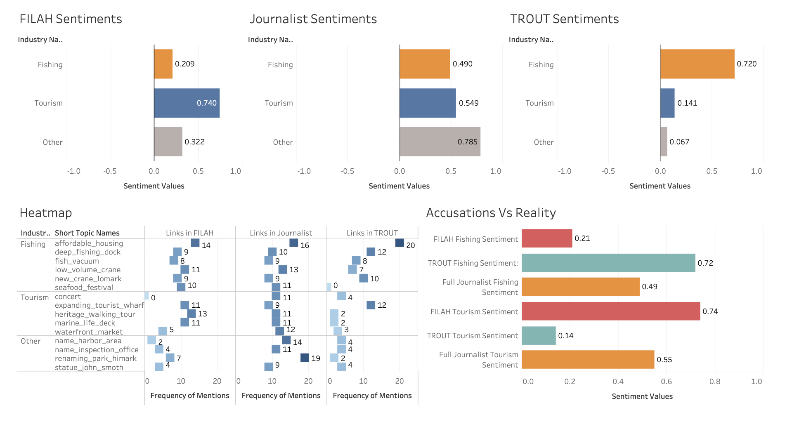
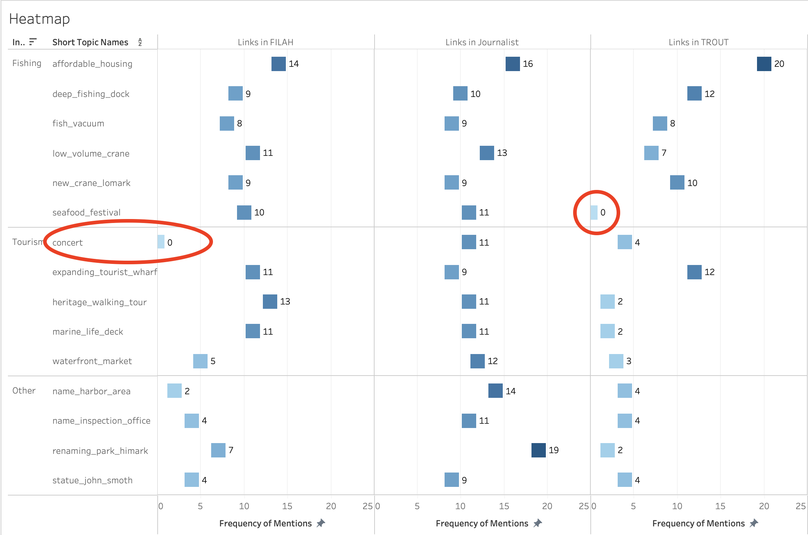
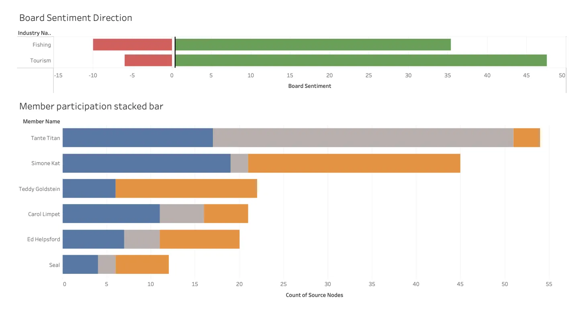
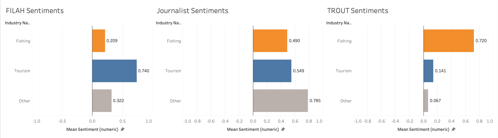
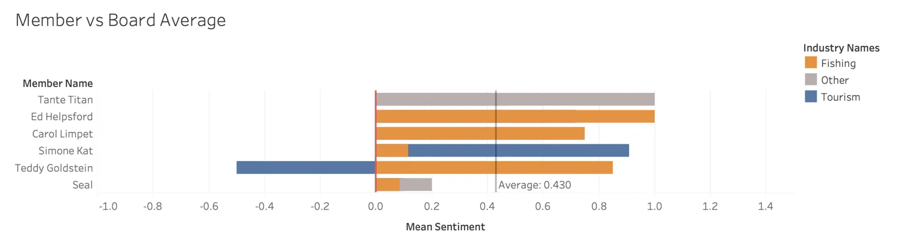
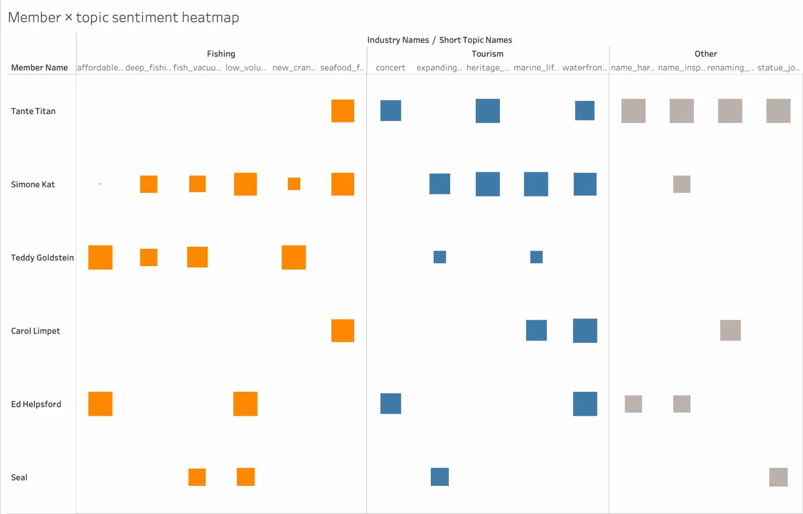
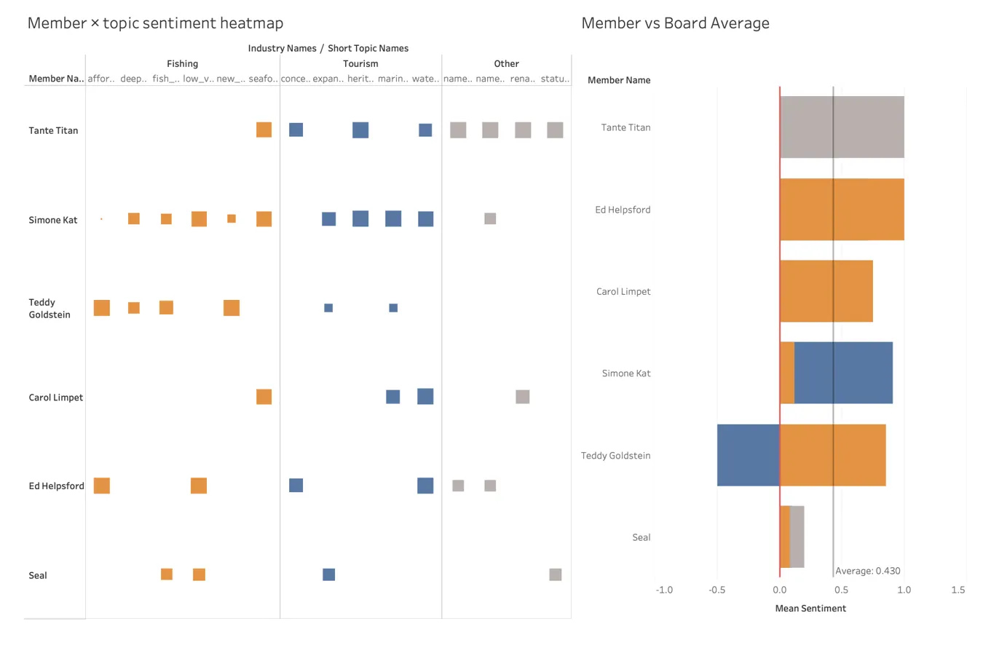
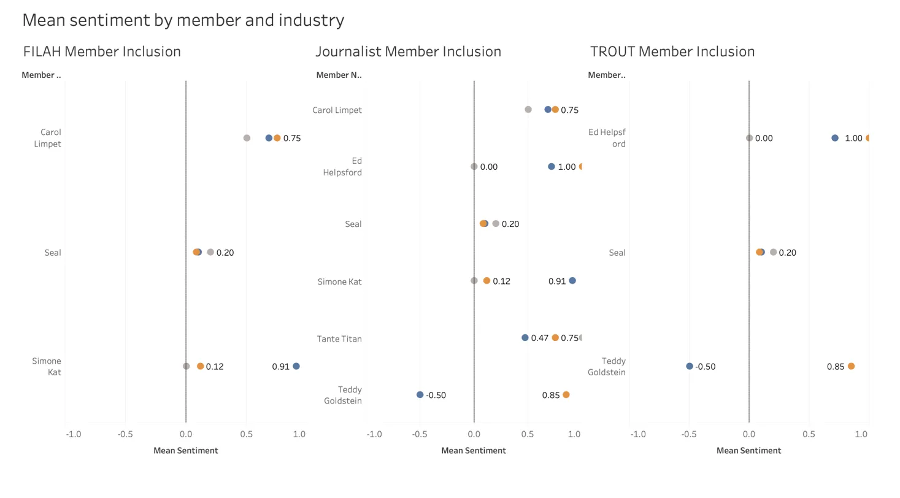

Results and Analysis
Overview of Findings
What makes this finding analytically interesting is that both groups were working from the same pool of evidence. This was not two independent observers reaching different conclusions. It was two groups with opposing agendas selectively extracting from a shared record.
Interactive Dashboard
Explore the full interactive dashboard below — use the tabs and filters to switch between datasets and members:

Q1 — Do FILAH’s and TROUT’s own datasets support their accusations?
What each group’s data shows
When analysed in isolation, both datasets appear to support their respective accusations:
- FILAH’s data shows board members engaging with Tourism topics at a mean sentiment of 0.740 versus Fishing topics at only 0.209. This appears to validate FILAH’s claim that the board is biased toward tourism.
- TROUT’s data shows the exact inverse — Fishing sentiment of 0.720 versus Tourism sentiment of only 0.141. This appears to validate TROUT’s claim of pro-fishing bias.
These are not small differences. They look like compelling evidence.
The dashboard below places all three datasets side by side — the trellis (top left) shows how dramatically sentiment shifts depending on whose records you use, and the Accusations vs Reality chart (bottom right) makes the overstatement explicit.

The heatmap evidence
The topic coverage heatmap reveals the mechanism behind the distortion. The two circled cells below are the smoking gun:
- FILAH recorded zero links for
concert— a Tourism topic — while accusing the board of pro-tourism bias. - TROUT recorded zero links for
seafood_festival— a Fishing topic — while accusing the board of pro-fishing bias.
These are not gaps from incomplete data collection. Both groups removed the topic that most weakened their argument.

concert and TROUT’s zero for seafood_festival. Neither omission appears in the journalist’s data.The accusations vs reality
Comparing each group’s claimed sentiment values against the full journalist baseline makes the overstatement measurable:
| FILAH claimed | Full reality | Overstatement | |
|---|---|---|---|
| Tourism sentiment | 0.74 | 0.55 | +0.19 |
| Fishing sentiment (TROUT) | 0.72 | 0.49 | +0.23 |
Each group overstated the apparent bias by approximately 0.2 sentiment points through selective inclusion alone — not by fabricating numbers, but by choosing which records to show.
Q2 — Is the COOTEFOO board actually biased?
Board-wide sentiment
Using the complete journalist dataset across all 6 members:
Fishing
Mean sentiment = 0.490
43 positive / 10 negative interactions
Tourism
Mean sentiment = 0.549
58 positive / 6 negative interactions
A difference of 0.059 across a −1 to +1 scale does not constitute meaningful bias. Both industries receive overwhelmingly positive engagement.
The chart below shows Board Sentiment Direction (top) and member participation breakdown (bottom) using the full journalist dataset. The green bars vastly outweigh the red across both industries.

The trellis below reinforces this — placing FILAH, Journalist, and TROUT side by side shows that the Journalist dataset sits squarely between the two partisan extremes.

Member-level variation exists — but it is not systemic
Individual members do show different industry orientations:
| Member | Fishing sentiment | Tourism sentiment | Profile |
|---|---|---|---|
| Tante Titan | 0.75 | 0.47 | Broadly positive across both |
| Ed Helpsford | 1.00 | 0.00 | Fishing-positive, tourism-neutral |
| Carol Limpet | — | 0.68 | Tourism-leaning |
| Simone Kat | 0.12 | 0.91 | Strongly tourism-leaning |
| Teddy Goldstein | 0.85 | −0.50 | Only member with negative industry sentiment |
| Seal | 0.20 | 0.20 | Low but balanced |
The individual variation is real — but it is variation between members, not a systematic board-level lean.


Q3 — Are the accusations weakened by the full dataset?
What changed and why
The sentiment scores for individual members do not change between datasets. What changes is who is present and what topics are covered — and this shifts the overall picture dramatically.
FILAH excluded:
Teddy Goldstein (Fishing=0.85)
Ed Helpsford (Fishing=1.0)
Tante Titan (Fishing=0.75)
→ These three are precisely the strongest pro-fishing members. Their absence drove FILAH’s fishing average down to 0.209.
TROUT excluded:
Simone Kat (Tourism=0.91)
Carol Limpet (Tourism=0.68)
Tante Titan (Tourism=0.47)
→ These three are precisely the strongest pro-tourism members. Their absence drove TROUT’s tourism average down to 0.141.
The suppression numbers
| Missing from FILAH | Missing from TROUT | |
|---|---|---|
| Fishing participation links | 28 | 32 |
| Tourism participation links | 30 | 47 |
| Other participation links | 38 | 41 |

The travel evidence
FILAH recorded 15 of 22 travel links. TROUT recorded only 4 of 22. The near-total absence of travel records from TROUT’s dataset is striking — the geographic dimension of board member activity was almost entirely suppressed. Of FILAH’s 15 recorded travel links, 7 were to industrial zones associated with fishing activity, directly contradicting their claim of pro-tourism bias.

Tante Titan — the suppressed member
She does not fit either narrative. She is not dramatically pro-tourism (which would support FILAH’s case) nor dramatically pro-fishing (which would support TROUT’s case). Her balanced profile made her inconvenient for both groups, so both groups removed her entirely.
Q4 — How does an individual member’s story change across datasets?
The most demonstrative case: Teddy Goldstein
Teddy appears only in TROUT’s dataset. Switching the Dataset View reveals:
- In TROUT’s view: Teddy is visible. Fishing=0.85, Tourism=−0.50. He looks like a fishing partisan and provides strong apparent support for TROUT’s accusation.
- In FILAH’s view: Teddy does not exist. FILAH recorded none of his 22 participation records.
- In Full Journalist: Same values as TROUT (0.85 / −0.50) — the full dataset does not add new Teddy records, it adds other members who counterbalance him.
TROUT showed Teddy because his profile fit their narrative. FILAH hid him because his pro-fishing sentiment would have undermined their claim.
The most dramatic absence: Tante Titan
Selecting Tante Titan and switching to FILAH or TROUT view produces empty charts. Switching to Full Journalist reveals 54 records with a balanced, positive profile. The contrast between empty panels and populated full-dataset panels is the clearest single illustration of deliberate suppression in the entire project.
The trellis below makes this visible — members absent from a dataset simply do not appear in that panel. The missing rows are the story.
